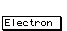
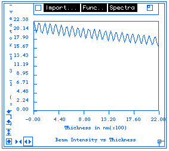
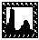
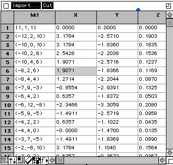

Data Presentation Objects:
Desktop Microscopist has a number of objects which have been written specifically
to display useful information to the user. In general, these objects do
not allow any importation or exportation of information.
Search/Match:Object:
Use the Search/Match object to query stored Desktop Microscopist files,
the Electron Diffraction Database, the NBS Crystal Data File and the JCPDF
Powder Diffraction File. The search match object supports searches by chemistry,
by 2theta Bragg Angle, by g-vector and by crystal volume.
Found crystals are stored in a Crystal Object file and can be viewed by
an alpha numeric display and by plotted d-spacing. The search/match object
will plot a comparison of found d-spacings with experimental d-spacings.
It is possible to insert the found crystals into the Desktop Microscopist
Object Crystal objects via the Search/Match Menu. To search these files,
the crystals must be stored in appropriately identified folders. Separate
default search paths are used for EDD files and for Desktop Microscopist
files. To change the search path(s), access the Search Path's item under
the file menu. To
find out more about Search Paths.
Ruler Object:
The first two objects which are described, the Ruler and the Ruler button,
are used in all window objects as a quick reference for defined crystals,
beam parameters and definitions related to the specific object. The Ruler
also supplies two display lines. The top line is used as a short descriptive
.i.help line; while the bottom line displays specific information, such
as experimental d-space or angle between planes. When selecting a new function,
the necessary information to proceed may be found by reading the help line.
Look to the information line to describe the selected function and to return
any information which results from mouse interactions with the screen.
Ruler Button:
These objects appear as rectangular boxes on both table and window objects.
They will have a one or two descriptive word such as: or .Clicking on these
buttons will display a pop-up menu of the referenced information. Double
clicking on these objects will bring up the pertinent definition dialog
box. For example, clicking on the button will show the
lattice parameters, crystal volume and crystal density for the matrix crystal,
while double clicking on this button will bring up the Matrix Definition
Dialog Box.
Space Group:
There are two methods of activating the space group object. The first is
under the Edit Menu. When Space Group Tables are selected, a menu bar with
a list of the seven crystal families will appear. Selecting items under
any of the menus will display the appropriate page of the International
tables for crystallography. This display is an abbreviated version of the
International tables which concentrates on the Point sets for the active
space group. The headline approximates the headline from the International
tables and its description is best found in the International Tables vol.
A. Both the Point Set or Wyckoff positions and the reflection conditions
are presented. These values are not editable.
The second activation method is under the Crystal Definition Dialog box
while using the Wyckoff positions to define atomic positions. The space
group set is not visible from the dialog box. Use the space group identifiers
to facilitate crystal definition.
Atomic Info:Object:
The Atomic Info Object allows the viewing of stored atomic information.
This information includes name, symbol, atomic weight, atomic number, atomic
radius for typical ionic, covalent, metallic and van der Waal states. It
also supplies nuclear information such as isotopes, isotope relative abundance,
cross-sections and spins. Electronic information includes ground state electronic
configuration, electronic affinity, the work function for the standard crystal,
limited electrochemical information, electro-negativity, crystal structures,
transition temperatures, melting and boiling points and density at standard
temperature and pressure. It additionally reports available orbitals and
valances. This object gives access to the Atomic Scattering Object which
provides the capability to view and edit atomic electron and x-ray scattering
factors.
Access to the Atomic Info object is obtained from the Edit Menu under the
menu item Atomic Parameters.
Text Button:
Desktop Microscopist supports a text object for labeling plots, etc. It
is activated from the Ruler Object by simply clicking on the button labeled:
Text Off. This changes the button to read Text On. This enables the typing
of text onto the plot in a fashion similar to that found in a drawing program.
The text is stored as an object and can be subsequently edited and moved.
The only restriction at this time is that the shape of the box cannot be
altered by the user. It is automatically sized to best fit the typed data.
Press the <return> key for additional lines. Font type, font size,
font effects, text color and text justification are selected by the pop-up
menu which is activated by clicking and holding the Text On/Text Off ruler
button.
Graph Object:
The graph object has been extended in the new Desktop Microscopist 2.0.
Its increased functionality, displaying a standard x-y linear graph with
ordinate and abscissa labeled and a single title. In addition, it now can
be found in the Monte Carlo and diffractometer segments.

Example of the Graph Object
It allows the user to import or export text
data. Imported data must be in single column values with rows separated
by a return. Exported data will be in a similar format.
The menu allows the user to change
graph color, hide spectra, delete spectra and do some
simple spectra math.
The box will shrink the graph to an icon. Double clicking on the icon will bring the graph back. The will delete the graph box.
Clicking in the  bar but not on the pop up menus
or symbols allow the user to move the graph. Clicking in the graph will
cause the plot to expand around the point. -shift-click on the
graph will cause it to return to the original settings.
bar but not on the pop up menus
or symbols allow the user to move the graph. Clicking in the graph will
cause the plot to expand around the point. -shift-click on the
graph will cause it to return to the original settings.
Clicking in this symbol allows the user to shrink or
grow the graph box.
Text Box Object:
The textbox is a fully functional spread sheet like object which allows
display of numerical data for a particular object. It supports cut/copy
and paste of text. It allows export and import of numerical data in ascii
format. It can be moved, iconized and reshaped.

Example of the Text Object.
Work Environment:
This section describes general features and functions available with Desktop
Microscopist. It starts with a description of how to control the work environment
with such things as color control, window sizing, scrolling, and setting
magnifications. It continues with a reiteration of the Default concept and
methods to set defaults and finishes with a discussion of cut and paste
operations, printing and file manipulation.
Author:James T. Stanley J.
Stanley
 Desktop
Manual
Desktop
Manual
Distributed By: Virtual
Labs
Last Updated:1/12/96 Sat, Apr 27, 1996